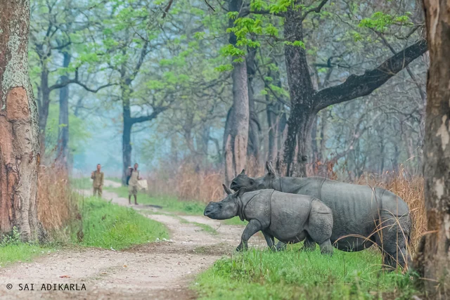
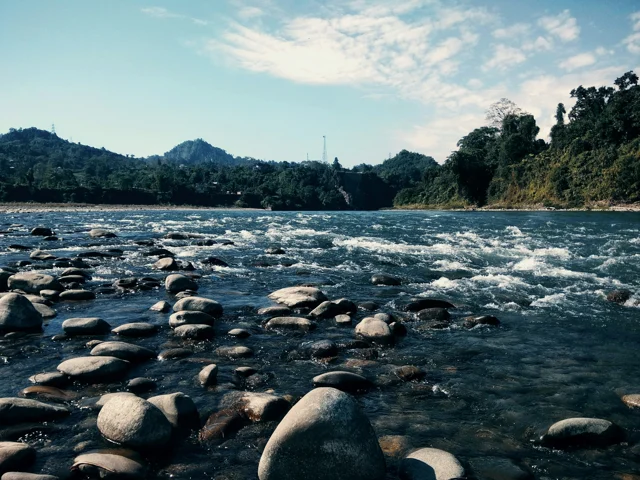
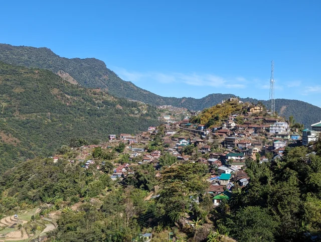
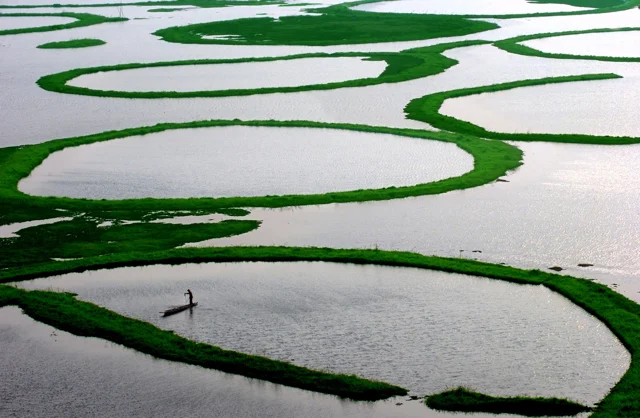
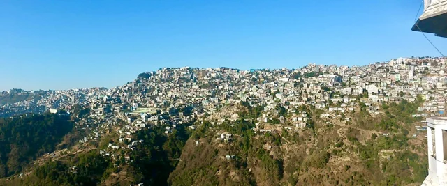
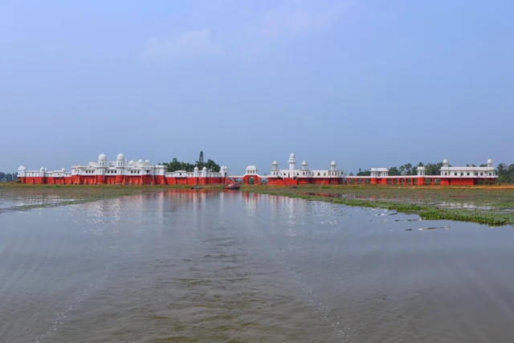

Gujarat Modhera
Photograph by Rupeshsarkar · Original photograph · CC BY-SA 4.0

Resized and converted to WebP; display may crop. Adaptations retain the source license.
The photographers behind our journeys.
Photograph by Rupeshsarkar · Original photograph · CC BY-SA 4.0
Resized and converted to WebP; display may crop. Adaptations retain the source license.

Photograph by Rohit Sharma (Rohit14400) · Original photograph · CC BY-SA 4.0
Resized and converted to WebP; display may crop. Adaptations retain the source license.

Photograph by Hardeep Asrani · Original photograph · CC0 1.0
Resized and converted to WebP; display may crop. Adaptations retain the source license.

Photograph by Mayank Choudhary · Original photograph · CC BY-SA 3.0
Resized and converted to WebP; display may crop. Adaptations retain the source license.

Photograph by Bhartrihari Pandiya · Original photograph · CC BY-SA 4.0
Resized and converted to WebP; display may crop. Adaptations retain the source license.

Photograph by Rajenver · Original photograph · CC BY-SA 3.0
Resized and converted to WebP; display may crop. Adaptations retain the source license.

Photograph by Wingedtree · Original photograph · CC BY-SA 4.0
Resized and converted to WebP; display may crop. Adaptations retain the source license.

Photograph by Shubhamk123 · Original photograph · CC BY-SA 4.0
Resized and converted to WebP; display may crop. Adaptations retain the source license.

Photograph by Sai Adikarla · Original photograph · CC BY 2.0
Resized and converted to WebP; display may crop. Adaptations retain the source license.

Photograph by Prof. Vikramjit Kakati · Original photograph · CC BY-SA 4.0
Resized and converted to WebP; display may crop to fit.

Photograph by Irshadul Haque · Original photograph · Unsplash License
Resized and converted to WebP; display may crop to fit.

Photograph by Joli Rumi · Original photograph · CC BY-SA 4.0
Resized and converted to WebP; display may crop to fit.

Photograph by Sudiptorana · Original photograph · CC BY-SA 4.0
Resized and converted to WebP; display may crop to fit.

Photograph by Jokomarel · Original photograph · CC BY 4.0
Resized and converted to WebP; display may crop to fit.

Photograph by Kingshuk Mondal · Original photograph · CC BY 4.0
Resized and converted to WebP; display may crop to fit.